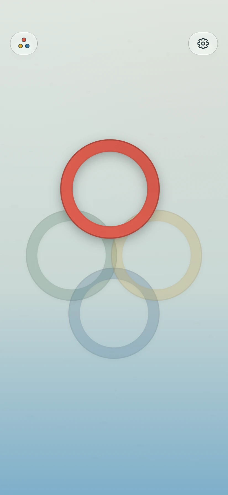
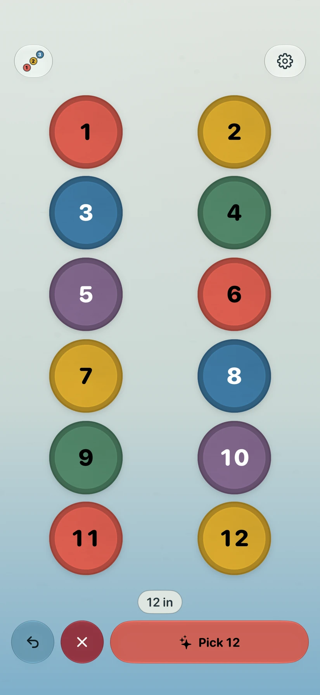
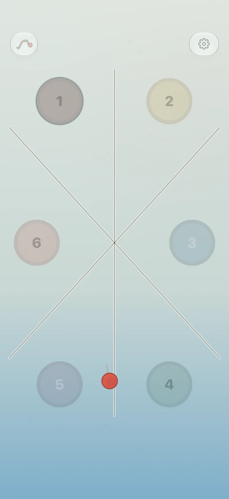
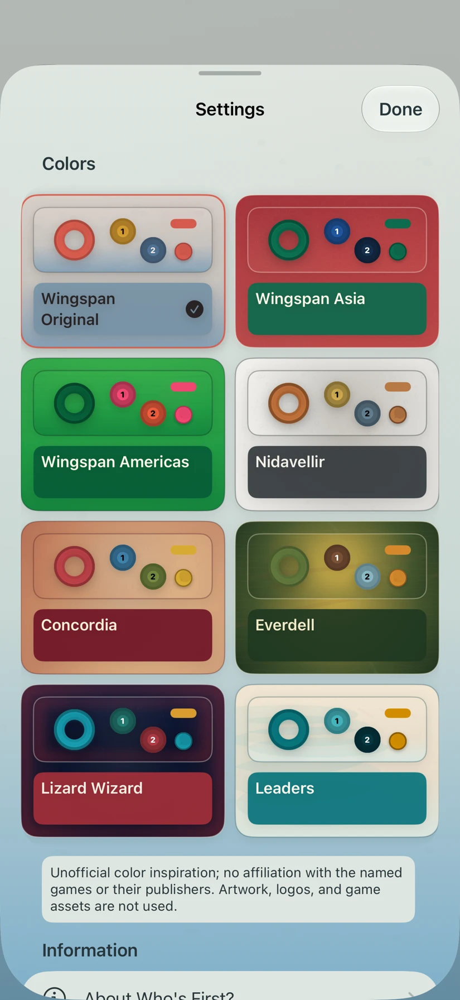

Chooser
Two to five people hold a finger on the screen. After a short buildup, one ring marks who goes first.
Free. No subscription.
Quickly and fairly pick your first player. Use fingers on the screen for up to five people, or choose a mode with room for a larger group.
Download on the App Store
A choice for your whole group
Start with Chooser for two to five people. For a larger group, use Tap In or Pinball from the mode menu.
Two to five people hold a finger on the screen. After a short buildup, one ring marks who goes first.
Each person taps once to join. When everyone’s in, pick from the group. Room for up to 50 players.

Two to twelve people tap near their seats. Flick the ball and follow the bounces to your first player. Every seat has an equal chance.

Eight visual worlds
Soft watercolor, jewel colors, warm parchment, and more. Each world changes the board and its pieces together.
Choose a look you enjoy in Settings. The app stays focused on picking your first player.

Ready for game night
Free, with no subscription, accounts, or ads. Works offline, with support for VoiceOver, larger text, and reduced motion.
Download on the App Store